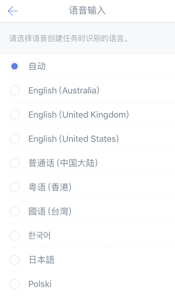

高级选项
快速添加
【快速添加】默认开启，在界面底部显示快速添加条，输入任务内容并回车即可创建。同时支持语音输入任务。

在侧边栏中，进入【设置】-【高级选项】，关闭【快速添加】切换为加号键。
剪贴板添加任务
在侧边栏中，进入【设置】-【高级选项】，启用【剪贴板添加任务】。
开启此功能后，当您的剪贴板内容包含时间等信息时，进入滴答清单，将自动询问您是否需要创建任务。
智能识别日期
在侧边栏中，进入【设置】-【高级选项】-【智能识别日期】，可以启用【文本输入识别】。
启用后，当您通过【快速添加】创建任务时，滴答清单能够自动识别任务中的时间信息，并为任务设置提醒。
同时，您还可以选择开启【移除任务文本中的日期】，开启后，日期文本将从任务中被删去。
若文本误识别，点击一下高亮文本即可取消识别。
例如：创建「今天上午十点开会」的任务，创建成功后任务会显示为「开会」，任务到期时间将会设定为「今天上午十点」。

订阅日历
进入【设置】-【高级选项】-【订阅日历】，打开开关即可。
- 显示本地日历
「设置」-【高级选项】-【订阅日历】，选择开启，在「可见的日历」中设置需要显示或者隐藏的日历。如节假日、生日、工作等日历分组。
滴答清单显示的日历事件是本地日历所能显示的事件，如果你设置了本地日历不能读取该事件，那就不会显示在滴答清单上。

- 订阅其他日历事件到滴答清单中
滴答清单允许您从其他日历服务中订阅事件,如谷歌日历。
显示日历清单之后，点击进入日历详情，选择【增加日历订阅】，输入你想订阅日历的URL，即可完成订阅。
提醒事项与 Siri
进入【设置】-【高级选项】-【提醒事项与 Siri】，即可在打开滴答清单时，自动将 Siri 创建的、或直接在提醒事项中创建的任务移到滴答清单的收集箱中，并从提醒事项中删除。
你也可以点击页面下方的「导入已有任务」来将「提醒事项」中已经有的任务移到滴答清单中。
注：本功能为高级账户功能。
密码锁定
你可以给滴答清单添加一个单独的安全锁，来保护你的信息安全。成功设置安全锁后，进入应用将需要密码。
在侧边栏中，进入【设置】-【高级选项】，选择【密码锁定】并设置为开启，即可设置自己的数字密码锁。
iPhone 5s 及以上的机型，还可以使用指纹解锁。
语音输入
你可以在侧边栏中，进入【设置】-【高级选项】，选择【语音输入】，来设置自己在语音输入时使用的语言。
滴答清单可以识别多种语言。
